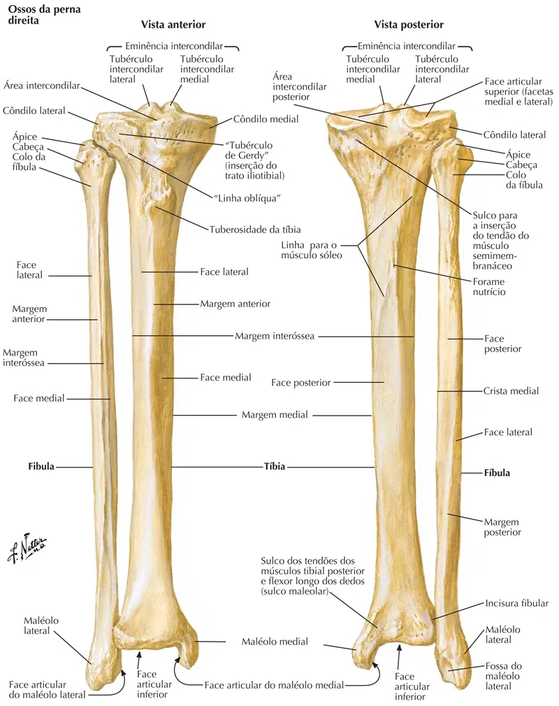

Tíbia e fíbula são dois ossos longos, fortemente unidos, os quais, com a membrana interóssea distendida entre eles, formam o esqueleto da perna.
A tíbia é medial e mais robusta que a fíbula, articulando-se com o fêmur pela sua extremidade proximal.
Distalmente, entretanto, ambos os ossos articulam-se com o tálus embora a tíbia seja a responsável direta pela transmissão do peso àquele osso.
Observe como a extremidade proximal da tíbia se expande para constituir uma plataforma destinada a articular-se com a extremidade distal do fêmur.
Logo abaixo da localização da patela no joelho humano, encontra-se a tuberosidade da Tíbia – uma grande elevação oblonga onde se insere o ligamento patelar.
Esta plataforma está constituída pelos côndilos medial e lateral da tíbia que apresentam faces articulares na sua parte superior, separadas por uma elevação mediana, a eminência intercondilar.
Na verdade, esta projeção mediana está constituída de dois tubérculos, o intercondilar medial e o intercondilar lateral.
Observe a presença de 2 áreas, respectivamente, anterior e posterior à eminência intercondilar:
A anterior é maior, triangular, denominada área intercondilar anterior;
A posterior é menor, estreitada, área intercondilar posterior.

Basicamente o corpo da tíbia tem forma triangular apresentando portanto 03 margens:
Anterior, muito proeminente e subcutânea, medial e lateral, que delimitam as 03 faces, medial, lateral e posterior.
Devido à posição do osso, pode-se palpar facilmente, não só a margem anterior como também a face medial do corpo da tíbia no vivente.
Observe como a margem lateral é cortante: aí se prende a membrana interóssea, e por esta razão, esta é também conhecida como margem interóssea.
A margem anterior, muito nítida nos 2/3 proximais, atenua-se no terço distal, e inclusive sofre um desvio medial, fazendo com que a face lateral, nesta região venha a ocupar uma posição ligeiramente anterior.
Na parte mais superior da face posterior note a presença de uma crista pouco marcada que, partindo da face articular fibular cruza medial e obliquamente a face posterior para alcançar a margem medial: é a linha do músculo sóleo (linha solear).
A extremidade distal da tíbia é uma continuação direta do corpo do osso que, estreitado na junção do terço médio com o distal, vai se alargando para constituir aquela extremidade.
Assim, observe que a face medial do corpo termina expandindo-se numa robusta projeção óssea, o maléolo medial, facilmente palpável sob a pele, ao nível do tornozelo.
Na parte posterior do maléolo medial está presente o sulco maleolar, no qual se aloja o tendão do m. tibial posterior.
A face lateral do maléolo é lisa, articula-se com o tálus e recebe o nome de face articular do maléolo.
Note que ela é contínua com a face articular inferior da extremidade distal da tíbia, retangular, também destinada a articular-se com o tálus.
Finalmente, observe que a face lateral da epífise distal é marcada pela presença de uma incisura, a incisura fibular, que recebe a extremidade distal da fíbula.
É um osso longo, muito menos volumoso que a tíbia com a qual se articula proximal e distalmente.
Observe sua extremidade superior (na figura), constituída pela cabeça da fíbula e identifique, na sua superfície medial, uma faceta oval, situada posteriormente, destinada à articulação com a face articular fibular do côndilo lateral da tíbia: é a face articular da cabeça da fíbula.
O corpo da fíbula, bastante delgado, está unido à extremidade proximal por uma zona estreitada, o colo, de limites imprecisos, e apresenta-se ligeiramente torcido em espiral.
Por esta razão, das suas três bordas (interóssea, anterior e posterior), somente a primeira pode ser identificada com facilidade.
Como o nome indica, prende-se aí a membrana interóssea.
A extremidade distal da fíbula tem forma triangular e sua superfície lateral é subcutânea, facilmente palpável no nível do tornozelo e termina em ponta, constituindo o maléolo lateral.
Na verdade, pode-se dizer que a extremidade distal da fíbula é o maléolo lateral.
Na sua superfície medial nota-se uma face articular para a articulação com o tálus e, posteriormente a ela, a fossa do maléolo lateral.
Observe que não há uma face articular para a articulação com a tíbia: a região situada acima da face articular do maléolo, justapõe-se à incisura fibular.
Este detalhe pode ser melhor examinado em um esqueleto articulado.